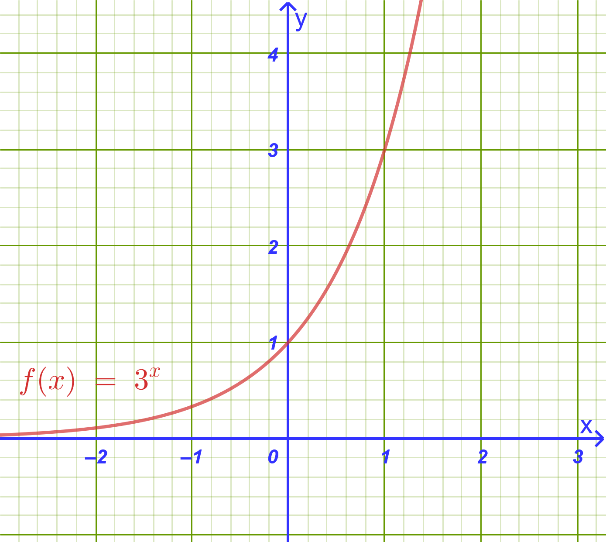
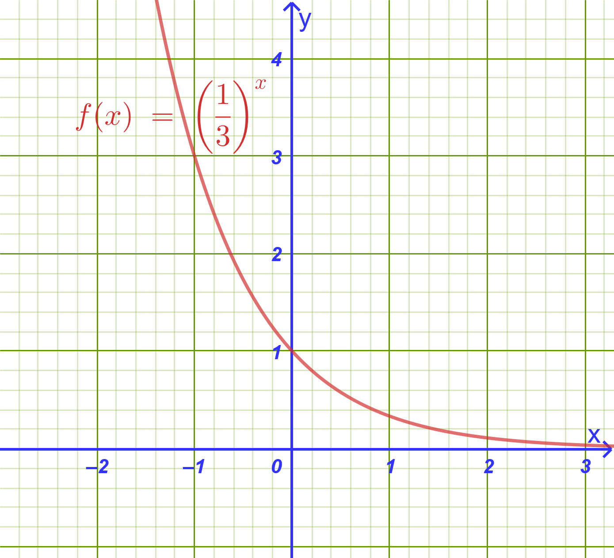
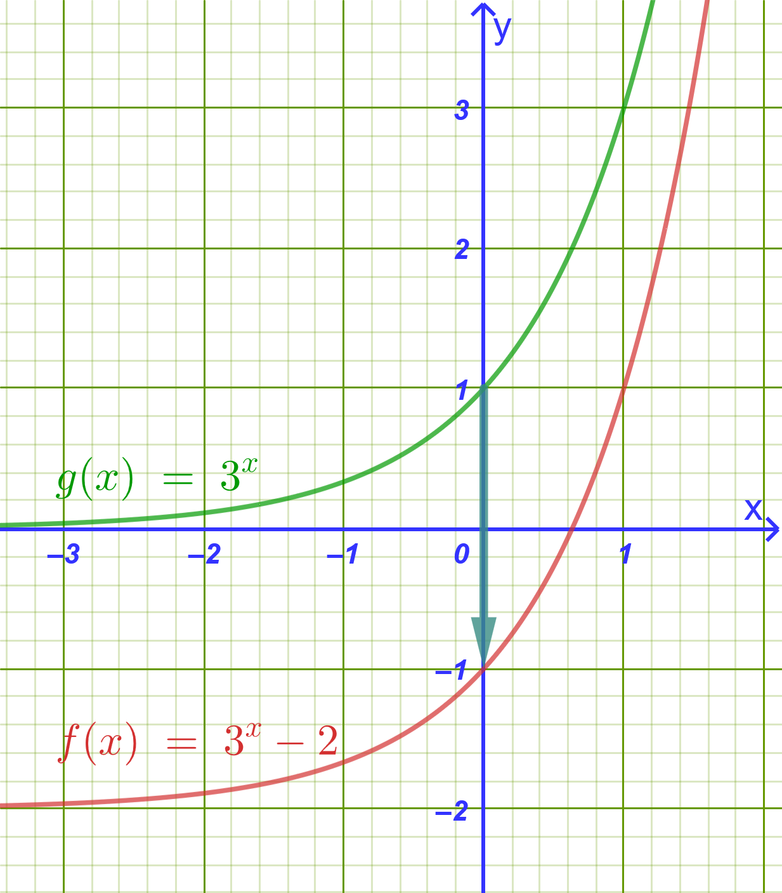
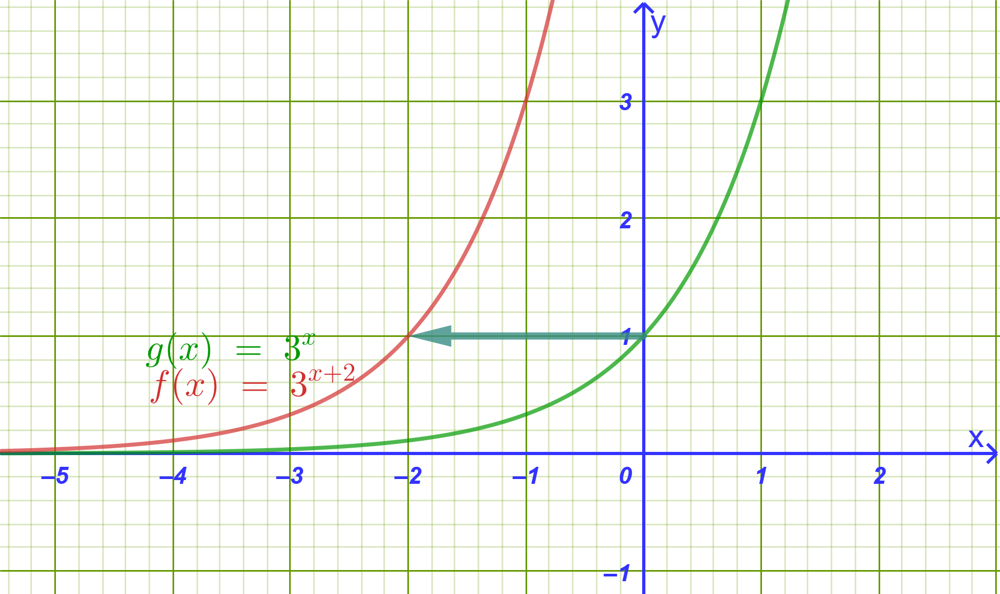
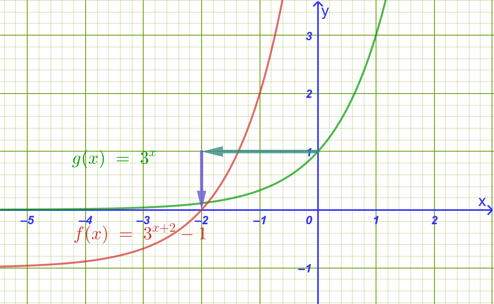
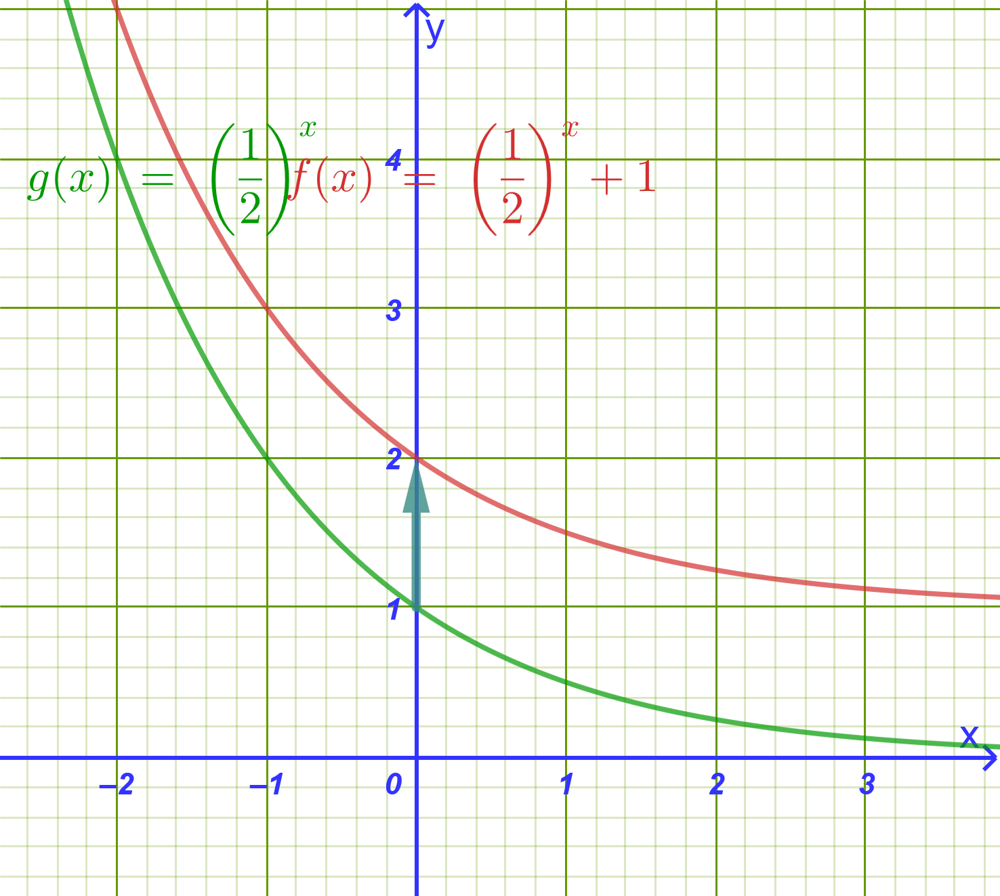
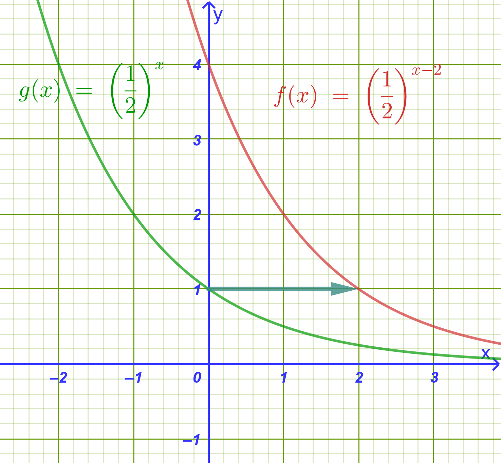
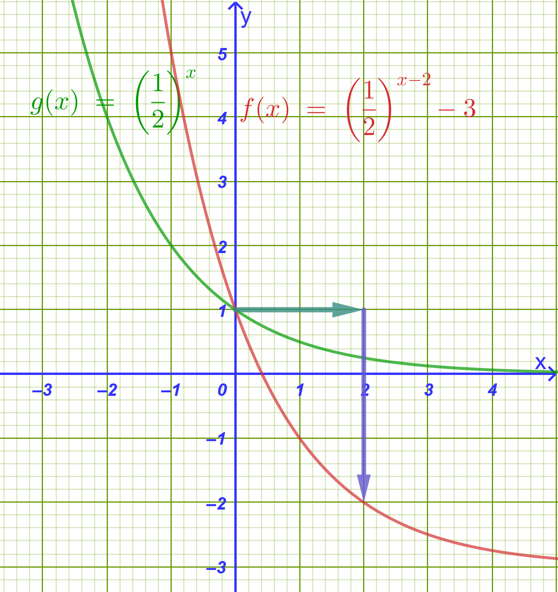

1 Εκθετική συνάρτηση
1.1 Δυνάμεις με Ρητό Εκθέτη
1.1.1 α) Ορισμός
Ορισμός
Αν \(\alpha > 0\), \(\mu \in \mathbb{Z}\) και \(\nu \in \mathbb{N}^*\) (\(\nu \ge 2\)), ορίζουμε ως δύναμη του \(\alpha\) με ρητό εκθέτη \(\dfrac{\mu}{\nu}\) την παράσταση:
\[\mathbf{\alpha^{\dfrac{\mu}{\nu}} = \sqrt[\nu]{\alpha^\mu}}\]
- Ειδική περίπτωση: Αν \(\mu, \nu \in \mathbb{N}^*\), ορίζουμε \(0^{\dfrac{\mu}{\nu}} = 0\).
1.1.2 β) Ιδιότητες Δυνάμεων με Ρητό Εκθέτη
Ιδιότητες
Για οποιουσδήποτε θετικούς πραγματικούς αριθμούς \(\alpha, \beta > 0\) και ρητούς αριθμούς \(r, r_1, r_2 \in \mathbb{Q}\), ισχύουν όλες οι γνωστές ιδιότητες των ακεραίων εκθετών:
Γινόμενο δυνάμεων με ίδια βάση: \(\alpha^{r_1} \cdot \alpha^{r_2} = \alpha^{r_1 + r_2}\)
Πηλίκο δυνάμεων με ίδια βάση: \(\dfrac{\alpha^{r_1}}{\alpha^{r_2}} = \alpha^{r_1 - r_2}\)
Δύναμη γινομένου: \((\alpha \cdot \beta)^r = \alpha^r \cdot \beta^r\)
Δύναμη πηλίκου: \(\left(\dfrac{\alpha}{\beta}\right)^r = \dfrac{\alpha^r}{\beta^r}\)
Δύναμη σε δύναμη: \(\left(\alpha^{r_1}\right)^{r_2} = \alpha^{r_1 \cdot r_2}\)
1.1.3 γ) Υπολογισμός με Υπολογιστή Τσέπης (Κομπιουτεράκι)
Πως χρησιμοποιούμε τον υπολογιστή τσέπης
Για τον υπολογισμό μιας δύναμης \(\alpha^{\dfrac{\mu}{\nu}}\) στο κομπιουτεράκι χρησιμοποιούμε το πλήκτρο \(x^y\) (ή \(y^x\) / \(\wedge\)):
Βήματα:
Πληκτρολογούμε τη βάση \(\alpha\).
Πιέζουμε το πλήκτρο \(x^y\).
Ανοίγουμε παρένθεση (, πληκτρολογούμε τον αριθμητή \(\mu\), το σύμβολο της διαίρεσης /, τον παρονομαστή \(\nu\) και κλείνουμε την παρένθεση ).
Πιέζουμε =.
Παράδειγμα: Για να υπολογίσουμε το \(8^{\dfrac{2}{3}}\):
Πληκτρολόγηση: 8 \(\rightarrow\) \(x^y\) \(\rightarrow\) ( \(\rightarrow\) 2 \(\rightarrow\) ÷ \(\rightarrow\) 3 \(\rightarrow\) ) \(\rightarrow\) =
Αποτέλεσμα:
4(αφού \(8^{\dfrac{2}{3}} = \sqrt[3]{8^2} = \sqrt[3]{64} = 4\)).
1.1.4 δ) Λυμένα Παραδείγματα
Παράδειγμα 1 (Υπολογισμός Τιμών):
Να υπολογιστούν οι αριθμητικές τιμές των παραστάσεων:
α) \(27^{\dfrac{2}{3}} = \sqrt[3]{27^2} = (\sqrt[3]{27})^2 = 3^2 = \mathbf{9}\)
β) \(16^{-\dfrac{3}{4}} = \dfrac{1}{16^{\dfrac{3}{4}}} = \dfrac{1}{(\sqrt[4]{16})^3} = \dfrac{1}{2^3} = \mathbf{\dfrac{1}{8}}\)
γ) \(81^{0.75} = 81^{\dfrac{3}{4}} = (\sqrt[4]{81})^3 = 3^3 = \mathbf{27}\)
Παράδειγμα 2 (Απλοποίηση Παράστασης):
Να απλοποιηθεί η παράσταση \(A = \dfrac{\alpha^{\dfrac{3}{4}} \cdot \alpha^{\dfrac{1}{2}}}{\alpha^{\dfrac{1}{4}}}\) για \(\alpha > 0\).
Λύση:
\[A = \frac{\alpha^{\dfrac{3}{4} + \dfrac{1}{2}}}{\alpha^{\dfrac{1}{4}}} = \frac{\alpha^{\dfrac{5}{4}}}{\alpha^{\dfrac{1}{4}}} = \alpha^{\dfrac{5}{4} - \dfrac{1}{4}} = \alpha^{\dfrac{4}{4}} = \mathbf{\alpha}\]
1.2 Δυνάμεις με Άρρητο Εκθέτη
1.2.1 α) Ορισμός
Ορισμός
Έστω \(\alpha > 0\) και \(x\) ένας άρρητος αριθμός.
Θεωρούμε την ακολουθία των ρητών προσεγγίσεων \(\rho_\nu\) του \(x\) κατ’ έλλειψη με \(\nu\) δεκαδικά ψηφία (\(\rho_1, \rho_2, \rho_3, \dots\)).
Καθώς το \(\nu \to +\infty\), οι όροι της ακολουθίας \(\alpha^{\rho_\nu}\) προσεγγίζουν έναν ορισμένο πραγματικό αριθμό.
Ο αριθμός αυτός ονομάζεται δύναμη του \(\alpha\) με εκθέτη τον άρρητο \(x\) και συμβολίζεται με \(\alpha^x\):
\[\mathbf{\alpha^x = \lim_{\nu \to \infty} \alpha^{\rho_\nu}}\]
- Ιδιότητες: Οι βασικές ιδιότητες των δυνάμεων ισχύουν αμετάβλητες για όλους τους πραγματικούς εκθέτες \(x_1, x_2 \in \mathbb{R}\).
1.2.2 β) Υπολογισμός με Υπολογιστή Τσέπης
- Παράδειγμα: Υπολογισμός της δύναμης \(3^{\sqrt{2}}\):
Γνωρίζουμε ότι \(\sqrt{2} \approx 1.41421356...\)
Πληκτρολόγηση: 3 \(\rightarrow\) \(x^y\) \(\rightarrow\) 2 \(\rightarrow\) √ \(\rightarrow\) =
Αποτέλεσμα: \(\mathbf{3^{\sqrt{2}} \approx 4.728804}\)
1.2.3 γ) Λυμένα Παραδείγματα
Παράδειγμα 1:
Να απλοποιηθεί η παράσταση \(B = \left(2^{\sqrt{3}}\right)^{\sqrt{3}} \cdot 2^{1-\sqrt{3}} \cdot 2^{\sqrt{3}}\).
Λύση:
\[B = 2^{\sqrt{3} \cdot \sqrt{3}} \cdot 2^{(1-\sqrt{3}) + \sqrt{3}} = 2^3 \cdot 2^1 = 8 \cdot 2 = \mathbf{16}\]
Παράδειγμα 2:
Να συγκριθούν οι αριθμοί \(5^{\sqrt{2}}\) και \(5^{\sqrt{3}}\).
Λύση:
Επειδή η βάση είναι \(\alpha = 5 > 1\) και ισχύει \(\sqrt{2} < \sqrt{3}\), η συνάρτηση είναι γνησίως αύξουσα, οπότε: \[\mathbf{5^{\sqrt{2}} < 5^{\sqrt{3}}}\]
1.3 Εκθετική Συνάρτηση
1.3.1 α) Ορισμός
Ορισμός
Έστω \(\alpha > 0\) με \(\alpha \neq 1\). Η συνάρτηση \(f: \mathbb{R} \to \mathbb{R}\) με τύπο:
\[\mathbf{f(x) = \alpha^x}\]
ονομάζεται εκθετική συνάρτηση με βάση \(\alpha\).
- Σημείωση: Αν \(\alpha = 1\), προκύπτει η σταθερή συνάρτηση \(f(x) = 1^x = 1\).
1.3.2 β) Μελέτη & Ιδιότητες της Εκθετικής Συνάρτησης
| Ιδιότητα | Περίπτωση \(\alpha > 1\) | Περίπτωση \(0 < \alpha < 1\) |
|---|---|---|
| Πεδίο Ορισμού | \(A = \mathbb{R}\) | \(A = \mathbb{R}\) |
| Σύνολο Τιμών | \(f(A) = (0, +\infty)\) | \(f(A) = (0, +\infty)\) |
| Μονοτονία | Γνησίως αύξουσα στο \(\mathbb{R}\) (\(x_1 < x_2 \implies \alpha^{x_1} < \alpha^{x_2}\)) | Γνησίως φθίνουσα στο \(\mathbb{R}\) (\(x_1 < x_2 \implies \alpha^{x_1} > \alpha^{x_2}\)) |
| Σημεία Τομής | Τέμνει τον \(y'y\) στο \((0,1)\). Δεν τέμνει τον \(x'x\). | Τέμνει τον \(y'y\) στο \((0,1)\). Δεν τέμνει τον \(x'x\). |
| Ασύμπτωτη | Ο αρνητικός ημιάξονας \(Ox'\) (\(y=0\) όταν \(x \to -\infty\)) | Ο θετικός ημιάξονας \(Ox\) (\(y=0\) όταν \(x \to +\infty\)) |
| Ιδιότητα 1-1 | \(\alpha^{x_1} = \alpha^{x_2} \iff x_1 = x_2\) | \(\alpha^{x_1} = \alpha^{x_2} \iff x_1 = x_2\) |
Οδηγία
Διερευνήστε την εκθετική συνάρτηση για τις διάφορες τιμές του α.
Αλλάξτε την τιμή του α απο τον δρομέα α.
Όταν \(α \gt 1\)
Όταν \(α=1\)
Όταν \(0\lt α \lt 1\)
1.3.3 γ) Παράδειγμα Μελέτης: \(f(x) = 3^x\) και \(g(x) = \left(\dfrac{1}{3}\right)^x\)
- Μελέτη της \(f(x) = 3^x\) (\(\alpha = 3 > 1\)):
Λύση:

Πεδίο ορισμού: \(\mathbb{R}\), Σύνολο τιμών: \((0, +\infty)\).
Μονοτονία: Γνησίως αύξουσα στο \(\mathbb{R}\).
Πίνακας Τιμών:
\(x\) \(-2\) \(-1\) \(0\) \(1\) \(2\) \(f(x) = 3^x\) \(\dfrac{1}{9}\) \(\dfrac{1}{3}\) \(1\) \(3\) \(9\)
- Μελέτη της \(g(x) = \left(\dfrac{1}{3}\right)^x = 3^{-x}\) (\(0 < \alpha = \dfrac{1}{3} < 1\)):
Λύση:

Πεδίο ορισμού: \(\mathbb{R}\), Σύνολο τιμών: \((0, +\infty)\).
Μονοτονία: Γνησίως φθίνουσα στο \(\mathbb{R}\).
Πίνακας Τιμών:
\(x\) \(-2\) \(-1\) \(0\) \(1\) \(2\) \(g(x) = \left(\dfrac{1}{3}\right)^x\) \(9\) \(3\) \(1\) \(\dfrac{1}{3}\) \(\dfrac{1}{9}\) Γεωμετρική Παρατήρηση: Επειδή \(g(x) = f(-x)\), οι γραφικές παραστάσεις των συναρτήσεων \(y = 3^x\) και \(y = \left(\dfrac{1}{3}\right)^x\) είναι συμμετρικές ως προς τον άξονα \(y'y\).
1.4 Παραδείγματα εκθετικών εξισώσεων
Παραδείγματα 1:
Να λυθούν οι εξισώσεις:
i) \(3^{2x} = \dfrac{1}{81}\)
ii) \(4^x - 3 \cdot 2^x - 4 = 0\)
iii) \(5^{4x-1} = \dfrac{1}{125}\)
iv) \(25^x - 6 \cdot 5^x + 5 = 0\)
Λύση:
- i) \(3^{2x} = \dfrac{1}{81}\)
\[\Rightarrow 3^{2x} = \frac{1}{3^4}\]
\[\Rightarrow 3^{2x} = 3^{-4}\]
\[\Rightarrow 2x = -4 \Rightarrow x = -2\]
- ii) \(4^x - 3 \cdot 2^x - 4 = 0 \Rightarrow (2^2)^x - 3 \cdot 2^x - 4 = 0 \Rightarrow (2^x)^2 - 3 \cdot 2^x - 4 = 0\) Θέτουμε \(y = 2^x > 0\):
\[y^2 - 3y - 4 = 0\]
Διακρίνουσα \(\Delta = (-3)^2 - 4(1)(-4) = 9 + 16 = 25\).
\[y_{1,2} = \frac{3 \pm 5}{2} \Rightarrow \begin{cases} y_1 = 4 \\ y_2 = -1 & (\text{απορρίπτεται, αφού } y > 0) \end{cases}\]
Για \(y = 4\):
\[2^x = 4 \Rightarrow 2^x = 2^2 \Rightarrow x = 2\]
- iii) \(5^{4x-1} = \dfrac{1}{125}\)
\[\Rightarrow 5^{4x-1} = \frac{1}{5^3}\]
\[\Rightarrow 5^{4x-1} = 5^{-3}\]
\[\Rightarrow 4x - 1 = -3 \Rightarrow 4x = -2 \Rightarrow x = -\frac{1}{2}\]
- iv) \(25^x - 6 \cdot 5^x + 5 = 0 \Rightarrow (5^x)^2 - 6 \cdot 5^x + 5 = 0\) Θέτουμε \(y = 5^x > 0\):
\[y^2 - 6y + 5 = 0\]
Οι ρίζες είναι \(y_1 = 5\) και \(y_2 = 1\) (και οι δύο δεκτές).
Για \(y = 5 \Rightarrow 5^x = 5^1 \Rightarrow x = 1\)
Για \(y = 1 \Rightarrow 5^x = 5^0 \Rightarrow x = 0\)
Παραδείγματα 2:
i) Να λυθεί το σύστημα:
\[\begin{cases} 3 \cdot 2^x - 2 \cdot 5^y = 2 \\ 2 \cdot 2^x + 5^y = 13 \end{cases}\]
ii) Να λυθεί το σύστημα:
\[\begin{cases} 5 \cdot 3^x - 2 \cdot 2^y = 37 \\ 2 \cdot 3^x + \dfrac{1}{2} \cdot 2^y = 20 \end{cases}\]
Λύση:
(i)
Θέτουμε \(u = 2^x > 0\) και \(v = 5^y > 0\). Το σύστημα γίνεται:
\[\begin{cases} 3u - 2v = 2 \quad (1) \\ 2u + v = 13 \quad (2) \end{cases}\]
Από την \((2)\) έχουμε \(v = 13 - 2u\). Αντικαθιστούμε στην \((1)\):
\[3u - 2(13 - 2u) = 2 \Rightarrow 3u - 26 + 4u = 2 \Rightarrow 7u = 28 \Rightarrow u = 4\]
Τότε \(v = 13 - 2(4) = 5\).
Για \(u = 4 \Rightarrow 2^x = 4 \Rightarrow 2^x = 2^2 \Rightarrow x = 2\)
Για \(v = 5 \Rightarrow 5^y = 5 \Rightarrow 5^y = 5^1 \Rightarrow y = 1\)
Λύση: \((x, y) = (2, 1)\)
(ii) \[\begin{cases} 5 \cdot 3^x - 2 \cdot 2^y = 37 \\ 2 \cdot 3^x + \dfrac{1}{2} \cdot 2^y = 20 \end{cases}\]
Θέτουμε \(u = 3^x > 0\) και \(v = 2^y > 0\):
\[\begin{cases} 5u - 2v = 37 \quad (1) \\ 2u + \frac{1}{2}v = 20 \quad (2) \end{cases}\]
Πολλαπλασιάζουμε την \((2)\) με \(4\):
\[8u + 2v = 80 \quad (3)\]
Προσθέτουμε τις \((1)\) και \((3)\):
\[13u = 117 \Rightarrow u = 9\]
Από την \((3)\): \(8(9) + 2v = 80 \Rightarrow 72 + 2v = 80 \Rightarrow 2v = 8 \Rightarrow v = 4\).
- \(u = 9 \Rightarrow 3^x = 9 \Rightarrow x = 2\)
- \(v = 4 \Rightarrow 2^y = 4 \Rightarrow y = 2\)
Λύση: \((x, y) = (2, 2)\)
Παραδείγματα 3:
Να λυθούν οι ανισώσεις:
i) \(2^{x^2 - 4x} > \dfrac{1}{8}\)
ii) \(\left(\dfrac{1}{3}\right)^{x^2 + 2x} < \dfrac{1}{27}\)
iii) \(5^{x^2 - 5x} \ge \dfrac{1}{625}\)
iv) \(\left(\dfrac{1}{5}\right)^{x^2 - 3x} \le \dfrac{1}{25}\)
Λύση:
- i) \(2^{x^2 - 4x} > \dfrac{1}{8}\)
\[\Rightarrow 2^{x^2 - 4x} > 2^{-3}\]
Επειδή η βάση είναι \(2 > 1\), η συνάρτηση \(f(t) = 2^t\) είναι γνησίως αύξουσα, οπότε η φορά διατηρείται:
\[x^2 - 4x > -3 \Rightarrow x^2 - 4x + 3 > 0\]
Οι ρίζες του τριωνύμου είναι \(x_1 = 1\) και \(x_2 = 3\).
Άρα \(x \in (-\infty, 1) \cup (3, +\infty)\).
- ii) \(\left(\dfrac{1}{3}\right)^{x^2 + 2x} < \dfrac{1}{27}\)
\[\Rightarrow \left(\dfrac{1}{3}\right)^{x^2 + 2x} < \left(\dfrac{1}{3}\right)^3\]
Επειδή η βάση είναι \(0 < \frac{1}{3} < 1\), η συνάρτηση \(g(t) = \left(\frac{1}{3}\right)^t\) είναι γνησίως φθίνουσα, οπότε η φορά αλλάζει:
\[x^2 + 2x > 3 \Rightarrow x^2 + 2x - 3 > 0\]
Οι ρίζες του τριωνύμου είναι \(x_1 = -3\) και \(x_2 = 1\). Άρα \(x \in (-\infty, -3) \cup (1, +\infty)\).
- iii) \(5^{x^2 - 5x} \ge \dfrac{1}{625} \Rightarrow 5^{x^2 - 5x} \ge 5^{-4}\)
Επειδή \(5 > 1\):
\[x^2 - 5x \ge -4 \Rightarrow x^2 - 5x + 4 \ge 0\]
Οι ρίζες είναι \(x_1 = 1\) και \(x_2 = 4\).
Άρα \(x \in (-\infty, 1] \cup [4, +\infty)\).
- iv) \(\left(\dfrac{1}{5}\right)^{x^2 - 3x} \le \dfrac{1}{25} \Rightarrow \left(\dfrac{1}{5}\right)^{x^2 - 3x} \le \left(\dfrac{1}{5}\right)^2\) Επειδή \(0 < \frac{1}{5} < 1\):
\[x^2 - 3x \ge 2 \Rightarrow x^2 - 3x - 2 \ge 0\]
Διακρίνουσα \(\Delta = 9 - 4(1)(-2) = 17\).
Οι ρίζες είναι \(x_{1,2} = \dfrac{3 \pm \sqrt{17}}{2}\).
Άρα \(x \in \left(-\infty, \dfrac{3 - \sqrt{17}}{2}\right] \cup \left[\dfrac{3 + \sqrt{17}}{2}, +\infty\right)\).
Να γίνουν οι γραφικές παραστάσεις των συναρτήσεων:
i) \(f(x) = 3^x - 2\)
ii) \(g(x) = 3^{x+2}\)
iii) \(h(x) = 3^{x+2} - 1\)
iv) \(f(x) = \left(\dfrac{1}{2}\right)^x + 1\)
v) \(g(x) = \left(\dfrac{1}{2}\right)^{x-2}\)
vi) \(h(x) = \left(\dfrac{1}{2}\right)^{x-2} - 3\)
Λύση:
(με βασική την \(y = 3^x\))
- i) \(f(x) = 3^x - 2\)

Μετατόπιση: Προκύπτει από τη γραφική παράσταση της \(y = 3^x\) με κατακόρυφη μετατόπιση κατά 2 μονάδες προς τα κάτω.
Ασύμπτωτη: Η οριζόντια ασύμπτωτη γίνεται η ευθεία \(y = -2\).
Χαρακτηριστικά σημεία:
Για \(x=0: f(0) = 3^0 - 2 = -1 \Rightarrow (0, -1)\)
Για \(x=1: f(1) = 3^1 - 2 = 1 \Rightarrow (1, 1)\)
- ii) \(g(x) = 3^{x+2}\)

Μετατόπιση: Προκύπτει από τη γραφική παράσταση της \(y = 3^x\) με οριζόντια μετατόπιση κατά 2 μονάδες προς τα αριστερά.
Ασύμπτωτη: Παραμένει ο άξονας \(x'x\) (\(y = 0\)).
Χαρακτηριστικά σημεία:
Για \(x=0: g(0) = 3^2 = 9 \Rightarrow (0, 9)\)
Για \(x=-2: g(-2) = 3^0 = 1 \Rightarrow (-2, 1)\)
- iii) \(h(x) = 3^{x+2} - 1\)

Μετατόπιση: Προκύπτει από τη γραφική παράσταση της \(y = 3^x\) με οριζόντια μετατόπιση κατά 2 μονάδες προς τα αριστερά και κατακόρυφη μετατόπιση κατά 1 μονάδα προς τα κάτω.
Ασύμπτωτη: Η ευθεία \(y = -1\).
Χαρακτηριστικά σημεία:
Για \(x=-2: h(-2) = 3^0 - 1 = 0 \Rightarrow (-2, 0)\)
Για \(x=-1: h(-1) = 3^1 - 1 = 2 \Rightarrow (-1, 2)\)
- iv) \(f(x) = \left(\dfrac{1}{2}\right)^x + 1\)

Μετατόπιση: Κατακόρυφη μετατόπιση κατά 1 μονάδα προς τα πάνω.
Ασύμπτωτη: \(y = 1\).
Σημεία: \((0, 2)\) και \((1, 1.5)\).
- v) \(g(x) = \left(\dfrac{1}{2}\right)^{x-2}\)

Μετατόπιση: Οριζόντια μετατόπιση κατά 2 μονάδες προς τα δεξιά.
Ασύμπτωτη: \(y = 0\).
Σημεία: \((2, 1)\) και \((0, 4)\).
- vi) \(h(x) = \left(\dfrac{1}{2}\right)^{x-2} - 3\)

Μετατόπιση: 2 μονάδες δεξιά και 3 μονάδες κάτω.
Ασύμπτωτη: \(y = -3\).
Σημεία: \((2, -2)\) και \((0, 1)\).
1.5 Ο Αριθμός \(e\)
1.5.1 α) Ορισμός
Ορισμός
Ο αριθμός \(e\) (σταθερά του Euler) ορίζεται ως το όριο της ακολουθίας \(\left(1 + \dfrac{1}{\nu}\right)^\nu\) καθώς το \(\nu \to +\infty\):
\[\mathbf{e = \lim_{\nu \to \infty} \left(1 + \frac{1}{\nu}\right)^\nu \approx 2.71828}\]
Είναι άρρητος αριθμός. Η συνάρτηση \(f(x) = e^x\) ονομάζεται απλώς εκθετική συνάρτηση.
1.5.2 β) Παραδείγματα Εκθετικών Εξισώσεων, Ανισώσεων & Συστημάτων
Παράδειγμα 1 (Εκθετική Εξίσωση):
Να λυθεί στο \(\mathbb{R}\) η εξίσωση: \(e^{2x} - 3e^x + 2 = 0\).
Λύση:
Θέτουμε \(u = e^x > 0\). Η εξίσωση γίνεται: \[u^2 - 3u + 2 = 0 \iff (u - 1)(u - 2) = 0 \iff u = 1 \quad \text{ή} \quad u = 2\]
Αν \(u = 1 \iff e^x = 1 \iff e^x = e^0 \iff \mathbf{x = 0}\)
Αν \(u = 2 \iff e^x = 2 \iff \mathbf{x = \ln 2}\) , την συνάρτηση ln θα την συναντήσουμε στα επόμενα μαθήματα.
Παράδειγμα 2 (Εκθετική Ανίσωση):
Να λυθεί στο \(\mathbb{R}\) η ανίσωση: \(e^{3x-1} > e^{x+5}\).
Λύση:
Επειδή η βάση είναι \(e \approx 2.718 > 1\), η συνάρτηση \(f(t) = e^t\) είναι γνησίως αύξουσα. Επομένως: \[e^{3x-1} > e^{x+5} \iff 3x - 1 > x + 5 \iff 2x > 6 \iff \mathbf{x > 3}\]
Παράδειγμα 3 (Εκθετικό Σύστημα):
Να λυθεί το σύστημα: \[\begin{cases} e^x \cdot e^y = e^5 \\ e^{2x} \cdot e^{-y} = e^4 \end{cases}\]
Λύση:
Εφαρμόζουμε τις ιδιότητες των δυνάμεων: \[\begin{cases} e^{x+y} = e^5 \\ e^{2x-y} = e^4 \end{cases} \iff \begin{cases} x + y = 5 \\ 2x - y = 4 \end{cases}\]
Προσθέτοντας κατά μέλη: \(3x = 9 \iff \mathbf{x = 3}\).
Αντικαθιστώντας: \(3 + y = 5 \iff \mathbf{y = 2}\).
1.6 Ο Νόμος της Εκθετικής Μεταβολής
1.6.1 α) Ορισμός
Ορισμός
Ο νόμος της εκθετικής μεταβολής περιγράφει τη μεταβολή ενός φυσικού μεγέθους \(Q(t)\) συναρτήσει του χρόνου \(t\) μέσω της συνάρτησης:
\[\mathbf{Q(t) = Q_0 \cdot e^{c \cdot t}}\]
όπου:
\(Q_0 = Q(0) > 0\): η αρχική τιμή του μεγέθους (για \(t = 0\)).
\(c \in \mathbb{R}^*\): μια σταθερά που εξαρτάται από το φαινόμενο.
Οδηγία
Διερευνήστε την εκθετική μεταβολή για τις διάφορες τιμές των \(Q_0\) και \(c\).
Αλλάξτε την τιμή των \(Q_0\) και \(c\) από τους αντίστοιχους δρομείς.
Όταν \(Q_0\) μεταβάλετε.
Όταν \(c \gt 0\)
Όταν \(c\lt 0\)
1.6.2 β) Εκθετική Αύξηση & Εκθετική Απόσβεση
Εκθετική Αύξηση (\(c > 0\)): Η συνάρτηση \(Q(t)\) είναι γνησίως αύξουσα. Μοντελοποιεί φαινόμενα όπως η πληθυσμιακή αύξηση, ο ανατοκισμός και η ανάπτυξη μικροοργανισμών.
Εκθετική Απόσβεση / Μείωση (\(c < 0\)): Η συνάρτηση \(Q(t)\) είναι γνησίως φθίνουσα. Μοντελοποιεί φαινόμενα όπως η ραδιενεργός διάσπαση, η ψύξη ενός σώματος και η απόσβεση ταλαντώσεων.
1.6.3 γ) Παραδείγματα
Παράδειγμα 1 (Εκθετική Αύξηση — Πληθυσμός Βακτηρίων):
Ο αριθμός των βακτηρίων σε μια καλλιέργεια διπλασιάζεται κάθε \(3\) ώρες σύμφωνα με τον τύπο \(N(t) = N_0 \cdot 2^{\dfrac{t}{3}}\), όπου \(t\) ο χρόνος σε ώρες. Αν αρχικά υπάρχουν \(N_0 = 1000\) βακτήρια:
α) Πόσα βακτήρια θα υπάρχουν μετά από \(9\) ώρες;
β) Μετά από πόσες ώρες ο πληθυσμός θα φτάσει τα \(16000\) βακτήρια;
Λύση:
α) Για \(t = 9\): \[N(9) = 1000 \cdot 2^{\dfrac{9}{3}} = 1000 \cdot 2^3 = 1000 \cdot 8 = \mathbf{8000 \text{ βακτήρια}}\]
β) Αναζητούμε το \(t\) ώστε \(N(t) = 16000\): \[1000 \cdot 2^{\dfrac{t}{3}} = 16000 \iff 2^{\dfrac{t}{3}} = 16 \iff 2^{\dfrac{t}{3}} = 2^4 \iff \dfrac{t}{3} = 4 \iff \mathbf{t = 12 \text{ ώρες}}\]
Παράδειγμα 2 (Εκθετική Απόσβεση — Ραδιενεργός Διάσπαση):
Η ποσότητα \(Q(t)\) (σε γραμμάρια) μιας ραδιενεργού ουσίας που απομένει μετά από \(t\) χρόνια δίνεται από τον τύπο \(Q(t) = 80 \cdot 2^{-\dfrac{t}{5}}\).
α) Ποια ήταν η αρχική ποσότητα της ουσίας;
β) Ποια ποσότητα απομένει μετά από \(15\) χρόνια;
Λύση:
α) Για \(t = 0\): \(Q(0) = 80 \cdot 2^0 = \mathbf{80 \text{ gr}}\).
β) Για \(t = 15\): \[Q(15) = 80 \cdot 2^{-\dfrac{15}{5}} = 80 \cdot 2^{-3} = 80 \cdot \frac{1}{8} = \mathbf{10 \text{ gr}}\]
1.7 Ασκήσεις και Προβλήματα
1.7.1 Κατηγορία Α: Δυνάμεις με Ρητό & Άρρητο Εκθέτη (1–4)
- Να υπολογίσετε τις αριθμητικές τιμές των παραστάσεων:
α) \(16^{\dfrac{3}{4}}\)
β) \(32^{-\dfrac{2}{5}}\)
γ) \(\left(\dfrac{8}{27}\right)^{-\dfrac{2}{3}}\)
Να απλοποιήσετε την παράσταση: \[A = \frac{\left(a^{\dfrac{2}{3}}\right)^3 \cdot a^{-\dfrac{1}{2}}}{\sqrt{a}} \quad (a > 0)\]
Να συγκρίνετε τους αριθμούς:
α) \(3^{\sqrt{5}}\) και \(3^{\sqrt{7}}\)
β) \(\left(\frac{1}{2}\right)^{\sqrt{2}}\) και \(\left(\frac{1}{2}\right)^{\sqrt{3}}\)
- Να υπολογίσετε την τιμή της παράστασης \(B = 5^{2\sqrt{2}} \cdot 25^{1-\sqrt{2}}\).
1.7.2 Κατηγορία Β: Εκθετική Συνάρτηση & Μονοτονία (5–8)
- Να βρείτε το πεδίο ορισμού των συναρτήσεων:
α) \(f(x) = 5^{\dfrac{x+1}{x-2}}\)
β) \(g(x) = \left(\dfrac{1}{2}\right)^{\sqrt{x^2 - 4}}\)
- Να μελετήσετε ως προς τη μονοτονία τις συναρτήσεις:
α) \(f(x) = 4^{x-3}\)
β) \(g(x) = \left(\dfrac{2}{5}\right)^{1-x}\)
Να σχεδιάσετε στο ίδιο σύστημα αξόνων τις γραφικές παραστάσεις των συναρτήσεων \(f(x) = 2^x\), \(g(x) = 2^x + 1\) και \(h(x) = 2^{x-2}\).
Για ποιες τιμές του \(\lambda \in \mathbb{R}\) ορίζεται η εκθετική συνάρτηση \(f(x) = \left(\lambda^2 - 3\lambda + 3\right)^x\);
1.7.3 Κατηγορία Γ: Εκθετικές Εξισώσεις & Συστήματα (9–12)
- Να λύσετε στο \(\mathbb{R}\) τις εξισώσεις:
α) \(2^{x^2 - 5x + 6} = 1\)
β) \(3^{2x-1} = \dfrac{1}{27}\)
- γ) \(4^x - 5 \cdot 2^x + 4 = 0\)
- Να λύσετε στο \(\mathbb{R}\) τις εξισώσεις:
α) \(9^x - 4 \cdot 3^x + 3 = 0\)
β) \(e^{2x} + e^x - 2 = 0\)
Να λύσετε την εξίσωση: \[5^{x+1} + 5^{x} + 5^{x-1} = 31\]
Να λύσετε το σύστημα εξισώσεων: \[\begin{cases} 3^x \cdot 9^y = 81 \\ 2^{x+y} = 32 \end{cases}\]
1.7.4 Κατηγορία Δ: Εκθετικές Ανισώσεις (13–16)
- Να λύσετε στο \(\mathbb{R}\) τις ανισώσεις:
α) \(3^{2x-5} > 27\)
β) \(\left(\dfrac{1}{2}\right)^{x^2 - 3} \ge \dfrac{1}{8}\)
Να λύσετε την ανίσωση: \[4^x - 3 \cdot 2^x + 2 < 0\]
Να λύσετε την ανίσωση: \[e^{2x - 1} \le e^{x+2}\]
Να βρείτε τα διαστήματα στα οποία η γραφική παράσταση της συνάρτησης \(f(x) = 9^x - 10 \cdot 3^x + 9\) βρίσκεται κάτω από τον άξονα \(x'x\).
1.7.5 Κατηγορία Ε: Προβλήματα Εκθετικής Μεταβολής (17–20)
- (Πληθυσμιακή Αύξηση): Ο πληθυσμός μιας πόλης αυξάνεται εκθετικά σύμφωνα με τον τύπο \(P(t) = 50000 \cdot e^{0.02 t}\), όπου \(t\) ο χρόνος σε έτη από το 2020.
α) Ποιος ήταν ο πληθυσμός της πόλης το 2020;
β) Ποιος θα είναι ο πληθυσμός το 2030;
- (Ραδιενεργός Διάσπαση & Ημιζωή):
Η ημιζωή ενός ραδιενεργού υλικού είναι \(5\) έτη. Αν αρχικά υπάρχουν \(160 \text{ gr}\) του υλικού:
α) Να γράψετε τον τύπο της ποσότητας \(Q(t) = Q_0 \cdot 2^{-\dfrac{t}{5}}\) που απομένει μετά από \(t\) έτη.
β) Πόση ποσότητα θα απομείνει μετά από \(20\) έτη;
Λύση
α) Τύπος της ποσότητας \(Q(t)\)
Η αρχική ποσότητα του υλικού είναι \(Q_0 = 160\text{ gr}\).
Αντικαθιστώντας την τιμή \(Q_0 = 160\) στον δοσμένο τύπο \(Q(t) = Q_0 \cdot 2^{-\dfrac{t}{5}}\), παίρνουμε:
\[Q(t) = 160 \cdot 2^{-\dfrac{t}{5}}\]
(όπου το \(t\) εκφράζεται σε έτη και το \(Q(t)\) σε γραμμάρια).
β) Ποσότητα που απομένει μετά από 20 έτη
Για να βρούμε την ποσότητα μετά από \(t = 20\) έτη, αντικαθιστούμε \(t = 20\) στον τύπο που βρήκαμε:
\[Q(20) = 160 \cdot 2^{-\frac{20}{5}}\]
\[Q(20) = 160 \cdot 2^{-4}\]
Επειδή \(2^{-4} = \dfrac{1}{2^4} = \dfrac{1}{16}\):
\[Q(20) = 160 \cdot \frac{1}{16} = 10\text{ gr}\]
Απάντηση: Μετά από \(20\) έτη θα απομείνουν \(10\text{ gr}\) από το ραδιενεργό υλικό.
- (Ανατοκισμός): Ένα κεφάλαιο \(K_0 = 10000 \text{ €}\) τοκίζεται με ετήσιο επιτόκιο \(5\%\) με συνεχή ανατοκισμό, σύμφωνα με τον τύπο \(K(t) = 10000 \cdot (1.05)^t\), όπου \(t\) τα έτη.
α) Ποιο θα είναι το συνολικό ποσό μετά από \(2\) έτη;
β) Μετά από πόσα έτη το κεφάλαιο θα γίνει \(12100 \text{ €}\);
- (Ψύξη Σώματος — Νόμος του Νεύτωνα):
Η θερμοκρασία \(T(t)\) (σε \({}^\circ\text{C}\)) ενός ροφήματος που ψύχεται δίνεται από τον τύπο \(T(t) = 20 + 60 \cdot e^{-0.1 t}\), όπου \(t\) ο χρόνος σε λεπτά.
α) Ποια είναι η αρχική θερμοκρασία του ροφήματος;
β) Ποια είναι η θερμοκρασία του περιβάλλοντος χώρου (όταν \(t \to +\infty\));
Λύση
α) Αρχική θερμοκρασία του ροφήματος
Η αρχική θερμοκρασία αντιστοιχεί στη στιγμή \(t = 0\) λεπτά.
Αντικαθιστώντας \(t = 0\) στον τύπο \(T(t) = 20 + 60 \cdot e^{-0.1 t}\):
\[T(0) = 20 + 60 \cdot e^{-0.1 \cdot 0}\]
\[T(0) = 20 + 60 \cdot e^0\]
Επειδή \(e^0 = 1\):
\[T(0) = 20 + 60 \cdot 1 = 80^\circ\text{C}\]
Απάντηση: Η αρχική θερμοκρασία του ροφήματος είναι \(80^\circ\text{C}\).
β) Θερμοκρασία του περιβάλλοντος χώρου (όταν \(t \to +\infty\))
Όταν ο χρόνος \(t\) αυξάνεται απεριόριστα (\(t \to +\infty\)), ο εκθέτης \(-0.1 t \to -\infty\), οπότε:
\[\lim_{t \to +\infty} e^{-0.1 t} = 0\]
Επομένως, για τη θερμοκρασία του ροφήματος έχουμε:
\[\lim_{t \to +\infty} T(t) = 20 + 60 \cdot 0 = 20^\circ\text{C}\]
Απάντηση: Η θερμοκρασία του περιβάλλοντος χώρου είναι \(20^\circ\text{C}\).
1.7.6 Κατηγορία ΣΤ: Ειδικού χειρισμού (21-31)
- Αναγωγή στην ίδια βάση (\(a^{f(x)} = a^{g(x)}\))
Εξίσωση 21α:
\[2^{x^2 - 3x} = 16\]
(Υπόδειξη: Γράψτε το \(16\) ως \(2^4\))
Απάντηση: \(x = 4\) ή \(x = -1\)
Εξίσωση 21β:
\[9^{x-1} = \left(\frac{1}{27}\right)^{x+2}\]
(Υπόδειξη: Εκφράστε και τα δύο μέλη με βάση το \(3\))
- Απάντηση: \(x = -\dfrac{4}{5}\)
- Κοινός παράγοντας (Άθροισμα δυνάμεων)
Εξίσωση 22α:
\[3^{x+2} + 3^{x+1} + 3^x = 117\]
(Υπόδειξη: Βγάλτε κοινό παράγοντα το \(3^x\))
- Απάντηση: \(x = 2\)
Εξίσωση 22β:
\[2^{x+3} - 2^{x+1} + 2^x = 56\]
- Απάντηση: \(x = 3\)
- Αναγωγή σε Δευτεροβάθμιες (Αντικατάσταση \(u = a^x\))
Εξίσωση 23α:
\[4^x - 6 \cdot 2^x + 8 = 0\]
(Υπόδειξη: Θέστε \(u = 2^x > 0\))
- Απάντηση: \(x = 1\) ή \(x = 2\)
Εξίσωση 23β:
\[9^x - 2 \cdot 3^x - 3 = 0\]
(Υπόδειξη: Θέστε \(u = 3^x > 0\))
- Απάντηση: \(x = 1\) (η τιμή \(u = -1\) απορρίπτεται)
Εξίσωση 23γ (Με βάση το \(e\)):
\[e^{2x} - (e + 1)e^x + e = 0\]
- Απάντηση: \(x = 0\) ή \(x = 1\)
- Διαφορετικές Βάσεις & Ομογενείς Εκθετικές
Εξίσωση 24α:
\[5^{x-1} = 3^{x-1}\]
(Υπόδειξη: Διαιρέστε με \(3^{x-1}\) ώστε να σχηματιστεί \(\left(\dfrac{5}{3}\right)^{x-1} = 1\))
- Απάντηση: \(x = 1\)
Εξίσωση 24β (Ομογενής 2ου βαθμού):
\[2 \cdot 4^x - 5 \cdot 6^x + 3 \cdot 9^x = 0\]
(Υπόδειξη: Διαιρέστε όλους τους όρους με το \(9^x \neq 0\) και θέστε \(u = \left(\dfrac{2}{3}\right)^x\))
- Απάντηση: \(x = 0\) ή \(x = -1\)
- Να λυθεί η εξίσωση
\((x^2 - 9x + 19)^{(x^2 + x - 56)} = 1\)
Λύση:
Για να λύσουμε την εξίσωση \((x^2 - 9x + 19)^{(x^2 + x - 56)} = 1\), της μορφής \([A(x)]^{B(x)} = 1\), εξετάζουμε τις τρεις δυνατές περιπτώσεις:
Περίπτωση 1: Ο εκθέτης είναι 0 και η βάση είναι διάφορη του 0
\[B(x) = 0 \quad \text{και} \quad A(x) \neq 0\]
- Λύνουμε τον εκθέτη:
\[x^2 + x - 56 = 0\]
\(\Delta = 1^2 - 4(1)(-56) = 1 + 224 = 225 = 15^2\)
\[x = \frac{-1 \pm 15}{2} \Rightarrow x_1 = 7 \quad \text{και} \quad x_2 = -8\]
- Ελέγχουμε τη βάση \(A(x) = x^2 - 9x + 19\):
Για \(x = 7\): \(A(7) = 7^2 - 9(7) + 19 = 49 - 63 + 19 = 5 \neq 0\) (Δεκτή)
Για \(x = -8\): \(A(-8) = (-8)^2 - 9(-8) + 19 = 64 + 72 + 19 = 155 \neq 0\) (Δεκτή)
Λύσεις Περίπτωσης 1: \(x = 7\) και \(x = -8\)
Περίπτωση 2: Η βάση είναι ίση με 1
\[A(x) = 1\]
\[x^2 - 9x + 19 = 1 \Rightarrow x^2 - 9x + 18 = 0\]
\(\Delta = (-9)^2 - 4(1)(18) = 81 - 72 = 9 = 3^2\)
\[x = \frac{9 \pm 3}{2} \Rightarrow x_3 = 6 \quad \text{και} \quad x_4 = 3\]
(Στη βάση \(1\), η δύναμη ισούται πάντα με \(1\) για οποιονδήποτε πραγματικό εκθέτη)
Λύσεις Περίπτωσης 2: \(x = 6\) και \(x = 3\)
Περίπτωση 3: Η βάση είναι ίση με \(-1\) και ο εκθέτης είναι άρτιος ακέραιος
\[A(x) = -1 \quad \text{και} \quad B(x) \in 2\mathbb{Z}\]
- Λύνουμε τη βάση:
\[x^2 - 9x + 19 = -1 \Rightarrow x^2 - 9x + 20 = 0\]
\(\Delta = (-9)^2 - 4(1)(20) = 81 - 80 = 1\)
\[x = \frac{9 \pm 1}{2} \Rightarrow x_5 = 5 \quad \text{και} \quad x_6 = 4\]
- Ελέγχουμε αν ο εκθέτης \(B(x) = x^2 + x - 56\) είναι άρτιος:
- Για \(x = 5\):
\[B(5) = 5^2 + 5 - 56 = 25 + 5 - 56 = -26 \quad (\text{άρτιος})\]
Τότε \((-1)^{-26} = 1\) (Δεκτή) * Για \(x = 4\):
\[B(4) = 4^2 + 4 - 56 = 16 + 4 - 56 = -36 \quad (\text{άρτιος})\]
Τότε \((-1)^{-36} = 1\) (Δεκτή)
Λύσεις Περίπτωσης 3: \(x = 5\) και \(x = 4\)
Σύνολο Λύσεων
Οι ρίζες της εξίσωσης είναι:
\[x \in \{-8, 3, 4, 5, 6, 7\}\]
- Να λυθεί η εξίσωση:
\[2^m + 4^m + 8^m = 84\]
Λύση:
1: Μετασχηματισμός σε δυνάμεις του 2
Γράφουμε τις βάσεις ως δυνάμεις του \(2\):
\[2^m + (2^m)^2 + (2^m)^3 = 84\]
2: Αλλαγή μεταβλητής
Θέτουμε \(y = 2^m\) με \(y > 0\). Η εξίσωση γίνεται:
\[y^3 + y^2 + y - 84 = 0\]
3: Εύρεση ριζών
Δοκιμάζουμε ακέραιες ρίζες (διαιρέτες του \(84\)):
- Για \(y = 4\):
\[4^3 + 4^2 + 4 = 64 + 16 + 4 = 84 \quad (\text{επαληθεύει})\]
Άρα το \(y = 4\) είναι ρίζα.
Με παραγοντοποίηση (ή σχήμα Horner) διαιρώντας με το \((y - 4)\):
\[(y - 4)(y^2 + 5y + 21) = 0\]
Ελέγχουμε το τριώνυμο \(y^2 + 5y + 21\):
\[\Delta = 5^2 - 4(1)(21) = 25 - 84 = -59 < 0\]
Επειδή η διακρίνουσα είναι αρνητική, δεν υπάρχουν άλλες πραγματικές ρίζες.
Άρα η μοναδική δεκτή πραγματική ρίζα είναι \(y = 4\).
4: Υπολογισμός του \(m\)
Επιστρέφουμε στην αντικατάσταση \(2^m = y\):
\[2^m = 4 \Rightarrow 2^m = 2^2 \Rightarrow m = 2\]
(Η λύση είναι ακέραιος: \(m = 2 \in \mathbb{N}\))
- Να λυθεί η εξίσωση:
\[8^{x+1} + 8^{x-1} = 1040\]
Λύση
1: Ανάλυση των εκθετών
Χρησιμοποιούμε τις ιδιότητες των δυνάμεων \(8^{a+b} = 8^a \cdot 8^b\):
\[8^x \cdot 8^1 + 8^x \cdot 8^{-1} = 1040\]
Γράφουμε το \(8^{-1}\) ως κλάσμα \(\frac{1}{8}\):
\[8 \cdot 8^x + \frac{1}{8} \cdot 8^x = 1040\]
2: Βγάζουμε κοινό παράγοντα το \(8^x\)
\[8^x \left( 8 + \frac{1}{8} \right) = 1040\]
Κάνουμε ομώνυμα τα κλάσματα μέσα στην παρένθεση:
\[8^x \left( \frac{64 + 1}{8} \right) = 1040\]
\[8^x \cdot \frac{65}{8} = 1040\]
3: Επιλύουμε ως προς \(8^x\)
Πολλαπλασιάζουμε και με τα δύο μέλη επί \(\frac{8}{65}\):
\[8^x = 1040 \cdot \frac{8}{65}\]
Εκτελούμε τη διαίρεση \(1040 \div 65 = 16\):
\[8^x = 16 \cdot 8\]
\[8^x = 128\]
4: Εκφράζουμε ως δυνάμεις του 2
Γράφουμε το \(8\) και το \(128\) ως δυνάμεις του \(2\) (\(8 = 2^3\) και \(128 = 2^7\)):
\[(2^3)^x = 2^7\]
\[2^{3x} = 2^7\]
Εξισώνοντας τους εκθέτες:
\[3x = 7 \Rightarrow x = \frac{7}{3}\]
- Να λυθεί η εξίσωση:
\[25^x - 2 \cdot 15^x + 9^x = 0\]
Λύση:
Μέθοδος 1: Μορφή Τελείου Τετραγώνου
Εκφράζουμε τις βάσεις ως δυνάμεις των πρώτων αριθμών \(5\) και \(3\):
\(25^x = (5^2)^x = (5^x)^2\)
\(9^x = (3^2)^x = (3^x)^2\)
\(15^x = (5 \cdot 3)^x = 5^x \cdot 3^x\)
Η εξίσωση γίνεται:
\[(5^x)^2 - 2 \cdot (5^x \cdot 3^x) + (3^x)^2 = 0\]
Παρατηρούμε ότι το αριστερό μέλος είναι της μορφής \(a^2 - 2ab + b^2 = (a - b)^2\), όπου \(a = 5^x\) και \(b = 3^x\):
\[(5^x - 3^x)^2 = 0\]
Επομένως:
\[5^x - 3^x = 0 \Rightarrow 5^x = 3^x\]
Διαιρούμε με το \(3^x \neq 0\):
\[\left(\frac{5}{3}\right)^x = 1 \Rightarrow \left(\frac{5}{3}\right)^x = \left(\frac{5}{3}\right)^0 \Rightarrow x = 0\]
Μέθοδος 2: Διαίρεση με το \(9^x\) (Ομογενής Εκθετική)
Διαιρούμε όλους τους όρους της εξίσωσης με το \(9^x \neq 0\):
\[\frac{25^x}{9^x} - 2 \cdot \frac{15^x}{9^x} + \frac{9^x}{9^x} = 0\]
\[\left(\frac{25}{9}\right)^x - 2 \cdot \left(\frac{15}{9}\right)^x + 1 = 0\]
Απλοποιούμε τα κλάσματα:
\[\left[\left(\frac{5}{3}\right)^2\right]^x - 2 \cdot \left(\frac{5}{3}\right)^x + 1 = 0 \Rightarrow \left(\frac{5}{3}\right)^{2x} - 2 \cdot \left(\frac{5}{3}\right)^x + 1 = 0\]
Θέτουμε \(y = \left(\frac{5}{3}\right)^x > 0\):
\[y^2 - 2y + 1 = 0 \Rightarrow (y - 1)^2 = 0 \Rightarrow y = 1\]
Επιστρέφουμε στη μεταβλητή \(x\):
\[\left(\frac{5}{3}\right)^x = 1 \Rightarrow x = 0\]
Μοναδική Λύση
\[x = 0\]
- Να βρείτε τις τιμές των \(x\) και \(y\) (στους φυσικούς/πραγματικούς αριθμούς) που επαληθεύουν την εξίσωση:
\[\sqrt{2}^{\sqrt{x}} - \sqrt{2}^{\sqrt{y}} = 60\]
Λύση:
1: Περιορισμοί & Μετασχηματισμός με βάση το 2
Για να ορίζονται οι ρίζες, πρέπει \(x \ge 0\) και \(y \ge 0\).
Γράφουμε τη βάση \(\sqrt{2}\) ως δύναμη \(2^{1/2}\):
\[\left(2^{1/2}\right)^{\sqrt{x}} - \left(2^{1/2}\right)^{\sqrt{y}} = 60\]
\[2^{\frac{\sqrt{x}}{2}} - 2^{\frac{\sqrt{y}}{2}} = 60\]
2: Αλλαγή μεταβλητών
Θέτουμε \(u = \dfrac{\sqrt{x}}{2} \ge 0\) και \(v = \dfrac{\sqrt{y}}{2} \ge 0\).
Η εξίσωση γίνεται:
\[2^u - 2^v = 60\]
Επειδή το δεξί μέλος είναι θετικό (\(60 > 0\)), συμπεραίνουμε ότι \(2^u > 2^v\), άρα \(u > v \ge 0\).
3: Παραγοντοποίηση
Βγάζουμε κοινό παράγοντα το \(2^v\):
\[2^v \left( 2^{u-v} - 1 \right) = 60\]
Αναλύουμε το \(60\) σε γινόμενο μίας δύναμης του \(2\) και ενός περιττού αριθμού:
\[60 = 4 \cdot 15 = 2^2 \cdot 15\]
Άρα η εξίσωση παίρνει τη μορφή:
\[2^v \left( 2^{u-v} - 1 \right) = 2^2 \cdot 15\]
4: Επίλυση συστήματος
Εφόσον ο παράγοντας \(2^{u-v} - 1\) είναι περιττός αριθμός (για \(u - v \ge 1\) ακέραιο) και το \(2^v\) είναι δύναμη του \(2\), εξισώνουμε τους αντίστοιχους παράγοντες:
- Δύναμη του 2:
\[2^v = 2^2 \Rightarrow v = 2\]
- Περιττός παράγοντας:
\[2^{u-v} - 1 = 15 \Rightarrow 2^{u-v} = 16 \Rightarrow 2^{u-v} = 2^4 \Rightarrow u - v = 4\]
Αντικαθιστούμε το \(v = 2\):
\[u - 2 = 4 \Rightarrow u = 6\]
5: Υπολογισμός των \(x\) και \(y\)
Επιστρέφουμε στις αρχικές μεταβλητές:
- Για το \(x\):
\[u = 6 \Rightarrow \frac{\sqrt{x}}{2} = 6 \Rightarrow \sqrt{x} = 12 \Rightarrow x = 12^2 = 144\]
- Για το \(y\):
\[v = 2 \Rightarrow \frac{\sqrt{y}}{2} = 2 \Rightarrow \sqrt{y} = 4 \Rightarrow y = 4^2 = 16\]
Επαλήθευση
Για \(x = 144\) και \(y = 16\):
\[\sqrt{2}^{\sqrt{144}} - \sqrt{2}^{\sqrt{16}} = \sqrt{2}^{12} - \sqrt{2}^4 = 2^6 - 2^2 = 64 - 4 = 60 \quad (\text{Σωστό})\]
Τελική Απάντηση
\[(x, y) = (144, 16)\]
- Να λυθεί η εξίσωση:
\[9^x - x^4 = 65\]
Λύση:
1: Μετασχηματισμός & Διαφορά Τετραγώνων
Γράφουμε το \(9^x\) ως \((3^x)^2\) και το \(x^4\) ως \((x^2)^2\):
\[(3^x)^2 - (x^2)^2 = 65\]
Χρησιμοποιούμε την ταυτότητα της διαφοράς τετραγώνων \(a^2 - b^2 = (a - b)(a + b)\), όπου \(a = 3^x\) και \(b = x^2\):
\[(3^x - x^2)(3^x + x^2) = 65\]
2: Ανάλυση στους Φυσικούς / Ακεραίους (\(x \in \mathbb{N}\))
Αν αναζητούμε ακέραιες λύσεις, αναλύουμε το \(65\) σε γινόμενα θετικών παραγόντων, αφού \(3^x + x^2 > 0\):
\[65 = 1 \cdot 65 = 5 \cdot 13\]
Επειδή \(3^x + x^2 > 3^x - x^2\), έχουμε δύο πιθανά συστήματα:
Περίπτωση Α:
\[\begin{cases} 3^x + x^2 = 65 \\ 3^x - x^2 = 1 \end{cases}\]
Προσθέτοντας κατά μέλη:
\[2 \cdot 3^x = 66 \Rightarrow 3^x = 33 \quad (\text{δεν δίνει ακέραιο } x)\]
Περίπτωση Β:
\[\begin{cases} 3^x + x^2 = 13 \\ 3^x - x^2 = 5 \end{cases}\]
Προσθέτοντας κατά μέλη:
\[2 \cdot 3^x = 18 \Rightarrow 3^x = 9 \Rightarrow 3^x = 3^2 \Rightarrow x = 2\]
Αφαιρώντας κατά μέλη:
\[2x^2 = 8 \Rightarrow x^2 = 4 \Rightarrow x = 2 \quad (\text{ή } x = -2)\]
- Για \(x = 2\): \(3^2 - 2^2 = 9 - 4 = 5\) και \(3^2 + 2^2 = 9 + 4 = 13\) (Επαληθεύει: \(5 \cdot 13 = 65\)).
3: Μοναδικότητα στους Πραγματικούς Αριθμούς (\(x \in \mathbb{R}\))
Η απόδειξη της μοναδικότητας της ρίζας 2 απαιτεί την γνώση παραγώγων
Τελική Απάντηση
\[x = 2\]
- Να λυθεί η εκθετική εξίσωση:
\[3^{a+7} + 3^{a+13} = 730\]
Λύση:
1: Βγάζουμε κοινό παράγοντα τη μικρότερη δύναμη
Εκφράζουμε τον όρο \(3^{a+13}\) ως \(3^{a+7} \cdot 3^6\):
\[3^{a+7} + 3^{a+7} \cdot 3^6 = 730\]
Βγάζουμε κοινό παράγοντα το \(3^{a+7}\):
\[3^{a+7} \left( 1 + 3^6 \right) = 730\]
2: Υπολογισμός της παρένθεσης
Υπολογίζουμε τη δύναμη \(3^6\):
\[3^6 = 729\]
Αντικαθιστούμε στην παρένθεση:
\[3^{a+7} (1 + 729) = 730\]
\[3^{a+7} \cdot 730 = 730\]
3: Επίλυση ως προς \(a\)
Διαιρούμε και τα δύο μέλη με το \(730\):
\[3^{a+7} = 1\]
Γράφουμε το \(1\) ως δύναμη του \(3\) (\(3^0 = 1\)):
\[3^{a+7} = 3^0\]
Εξισώνοντας τους εκθέτες:
\[a + 7 = 0 \Rightarrow a = -7\]
Τελική Απάντηση
\[a = -7\]
2 ΔΙΑΓΩΝΙΣΜΑ ΑΞΙΟΛΟΓΗΣΗΣ: ΕΚΘΕΤΙΚΗ ΣΥΝΑΡΤΗΣΗ
Μάθημα: Άλγεβρα Β’ Γενικού Λυκείου
Ενότητα: Δυνάμεις με Ρητό/Άρρητο Εκθέτη, Εκθετική Συνάρτηση, Εκθετικές Εξισώσεις, Ανισώσεις & Νόμος Εκθετικής Μεταβολής
Διάρκεια: 60 λεπτά
2.1 ΘΕΜΑ Α (Θεωρία & Ερωτήσεις Κατανόησης — 25 Μονάδες)
Α1. (10 Μονάδες)
Τι ονομάζεται εκθετική συνάρτηση με βάση \(\alpha\) (\(\alpha > 0, \alpha \neq 1\)); (4 μονάδες)
Να αναφέρετε το πεδίο ορισμού, το σύνολο τιμών, τη μονοτονία και τα σημεία τομής με τους άξονες της συνάρτησης \(f(x) = \alpha^x\) για τις περιπτώσεις \(\alpha > 1\) και \(0 < \alpha < 1\). (6 μονάδες)
Α2. (5 Μονάδες)
Πώς ορίζεται ο αριθμός \(e\) (σταθερά του Euler);
Α3. (10 Μονάδες)
Να χαρακτηρίσετε τις παρακάτω προτάσεις ως Σωστό (Σ) ή Λάθος (Λ):
Για κάθε \(\alpha > 0\), \(\mu \in \mathbb{Z}\) και \(\nu \in \mathbb{N}^*\) (\(\nu \ge 2\)), ισχύει \(\alpha^{\frac{\mu}{\nu}} = \sqrt[\nu]{\alpha^\mu}\).
Η εκθετική συνάρτηση \(f(x) = \left(\dfrac{1}{2}\right)^x\) είναι γνησίως αύξουσα στο \(\mathbb{R}\).
Η γραφική παράσταση της συνάρτησης \(f(x) = \alpha^x\) τέμνει τον άξονα \(x'x\) στο σημείο \((1,0)\).
Για κάθε \(x \in \mathbb{R}\) ισχύει \(e^x > 0\).
Οι γραφικές παραστάσεις των συναρτήσεων \(f(x) = 2^x\) και \(g(x) = \left(\dfrac{1}{2}\right)^x\) είναι συμμετρικές ως προς τον άξονα \(y'y\).
2.2 ΘΕΜΑ Β (Απλοποίηση Παραστάσεων & Εκθετικές Εξισώσεις — 25 Μονάδες)
Β1. (10 Μονάδες)
Να υπολογιστεί η αριθμητική τιμή της παράστασης: \[A = \frac{27^{\dfrac{2}{3}} \cdot 16^{-\dfrac{3}{4}}}{81^{-0.25}}\]
Β2. (15 Μονάδες)
Να λυθούν στο \(\mathbb{R}\) οι παρακάτω εξισώσεις:
\(3^{x^2 - 4x + 3} = 1\) (7 μονάδες)
\(4^x - 5 \cdot 2^x + 4 = 0\) (8 μονάδες)
2.3 ΘΕΜΑ Γ (Εκθετικές Ανισώσεις & Μελέτη Συνάρτησης — 25 Μονάδες)
Γ1. (12 Μονάδες)
Να λυθούν στο \(\mathbb{R}\) οι ανισώσεις:
\(\left(\dfrac{1}{3}\right)^{2x - 1} \ge 9\) (6 μονάδες)
\(e^{2x} - e^{x+1} - e^x + e \le 0\) (6 μονάδες)
Γ2. (13 Μονάδες)
Δίνεται η συνάρτηση \(f(x) = 9^x - 4 \cdot 3^x + 3\).
Να βρείτε τα σημεία τομής της γραφικής παράστασης της \(f\) με τον άξονα \(x'x\). (7 μονάδες)
Να βρείτε τα διαστήματα στα οποία η γραφική παράσταση της \(f\) βρίσκεται κάτω από τον άξονα \(x'x\). (6 μονάδες)
2.4 ΘΕΜΑ Δ (Νόμος Εκθετικής Μεταβολής — 25 Μονάδες)
Η ποσότητα \(Q(t)\) (σε γραμμάρια) μιας ραδιενεργού ουσίας που απομένει σε ένα δείγμα μετά από \(t\) έτη δίνεται από τη συνάρτηση: \[Q(t) = Q_0 \cdot 2^{-\dfrac{t}{10}}\] όπου \(Q_0 > 0\) η αρχική ποσότητα της ουσίας.
Αν η αρχική ποσότητα της ουσίας είναι \(Q_0 = 160\text{ gr}\), να βρείτε την ποσότητα που θα απομείνει μετά από \(30\) έτη. (7 μονάδες)
Να βρεθεί ο χρόνος ημιζωής της ουσίας, δηλαδή ο χρόνος \(t\) στον οποίο η αρχική ποσότητα υποδιπλασιάζεται (\(Q(t) = \dfrac{Q_0}{2}\)). (8 μονάδες)
Μετά από πόσα έτη η ποσότητα που θα απομείνει στο δείγμα θα είναι ίση με \(5\text{ gr}\); (10 μονάδες)
3 ΑΝΑΛΥΤΙΚΕΣ ΛΥΣΕΙΣ ΔΙΑΓΩΝΙΣΜΑΤΟΣ
3.1 ΘΕΜΑ Α
Α1.1: Έστω \(\alpha > 0\) με \(\alpha \neq 1\). Η συνάρτηση \(f: \mathbb{R} \to \mathbb{R}\) με τύπο \(f(x) = \alpha^x\) ονομάζεται εκθετική συνάρτηση με βάση \(\alpha\).
Α1.2:
Πεδίο Ορισμού: \(A = \mathbb{R}\).
Σύνολο Τιμών: \(f(A) = (0, +\infty)\).
Μονοτονία: Αν \(\alpha > 1\), η συνάρτηση είναι γνησίως αύξουσα στο \(\mathbb{R}\). Αν \(0 < \alpha < 1\), είναι γνησίως φθίνουσα στο \(\mathbb{R}\).
Σημεία τομής: Τέμνει τον άξονα \(y'y\) στο σημείο \((0,1)\). Δεν τέμνει τον άξονα \(x'x\) (έχει ασύμπτωτη τον άξονα \(x'x\)).
Α2: Ο αριθμός \(e\) (σταθερά του Euler) ορίζεται ως το όριο της ακολουθίας \(\left(1 + \dfrac{1}{\nu}\right)^\nu\) καθώς το \(\nu \to +\infty\): \[e = \lim_{\nu \to \infty} \left(1 + \frac{1}{\nu}\right)^\nu \approx 2.71828\]
Α3:
Σωστό (Ορισμός δύναμης με ρητό εκθέτη).
Λάθος (Επειδή \(\alpha = \dfrac{1}{2} < 1\), η συνάρτηση είναι γνησίως φθίνουσα).
Λάθος (Τέμνει τον άξονα \(y'y\) στο \((0,1)\), ενώ τον \(x'x\) δεν τον τέμνει ποτέ).
Σωστό (Το σύνολο τιμών της εκθετικής είναι το \((0, +\infty)\)).
Σωστό (Ισχύει \(g(x) = (1/2)^x = 2^{-x} = f(-x)\)).
3.2 ΘΕΜΑ Β
Β1:
Μετατρέπουμε τις βάσεις σε δυνάμεις του \(2\) και του \(3\):
\(27^{\dfrac{2}{3}} = \left(3^3\right)^{\dfrac{2}{3}} = 3^{3 \cdot \dfrac{2}{3}} = 3^2 = 9\)
\(16^{-\dfrac{3}{4}} = \left(2^4\right)^{-\dfrac{3}{4}} = 2^{4 \cdot \left(-\dfrac{3}{4}\right)} = 2^{-3} = \dfrac{1}{2^3} = \dfrac{1}{8}\)
\(81^{-0.25} = 81^{-\dfrac{1}{4}} = \left(3^4\right)^{-\dfrac{1}{4}} = 3^{-1} = \dfrac{1}{3}\)
Αντικαθιστούμε στην παράσταση \(A\): \[A = \frac{9 \cdot \dfrac{1}{8}}{\dfrac{1}{3}} = \frac{\dfrac{9}{8}}{\dfrac{1}{3}} = \frac{9 \cdot 3}{8 \cdot 1} = \mathbf{\frac{27}{8}}\]
Β2.1:
\[3^{x^2 - 4x + 3} = 1 \iff 3^{x^2 - 4x + 3} = 3^0\]Επειδή η εκθετική συνάρτηση είναι 1-1: \[x^2 - 4x + 3 = 0 \iff (x - 1)(x - 3) = 0 \iff \mathbf{x = 1} \quad \text{ή} \quad \mathbf{x = 3}\]
Β2.2:
\[4^x - 5 \cdot 2^x + 4 = 0 \iff \left(2^x\right)^2 - 5 \cdot 2^x + 4 = 0\]Θέτουμε \(u = 2^x > 0\). Η εξίσωση γίνεται: \[u^2 - 5u + 4 = 0 \iff (u - 1)(u - 4) = 0 \iff u = 1 \quad \text{ή} \quad u = 4\]
Αν \(u = 1 \iff 2^x = 1 \iff 2^x = 2^0 \iff \mathbf{x = 0}\)
Αν \(u = 4 \iff 2^x = 4 \iff 2^x = 2^2 \iff \mathbf{x = 2}\)
Άρα \(S = \{0, 2\}\).
3.3 ΘΕΜΑ Γ
Γ1.1:
\[\left(\frac{1}{3}\right)^{2x - 1} \ge 9 \iff \left(\frac{1}{3}\right)^{2x - 1} \ge \left(\frac{1}{3}\right)^{-2}\]Επειδή η βάση είναι \(\alpha = \dfrac{1}{3} < 1\), η συνάρτηση είναι γνησίως φθίνουσα, οπότε η φορά της ανισότητας αλλάζει: \[2x - 1 \le -2 \iff 2x \le -1 \iff \mathbf{x \le -\frac{1}{2}}\]
Γ1.2:
Παραγοντοποιούμε κατά ομάδες: \[e^{2x} - e^{x+1} - e^x + e \le 0 \iff e^x(e^x - e) - 1(e^x - e) \le 0 \iff (e^x - 1)(e^x - e) \le 0\]
Οι ρίζες των παραγόντων είναι: \(e^x = 1 \iff x = 0\) και \(e^x = e \iff x = 1\).
Επειδή η \(y = e^x\) είναι γνησίως αύξουσα, το γινόμενο είναι αρνητικό ή μηδέν ανάμεσα στις δύο ρίζες: \[\mathbf{x \in}\]
Γ2.1:
Για να βρούμε τα σημεία τομής με τον \(x'x\), λύνουμε την εξίσωση \(f(x) = 0\): \[9^x - 4 \cdot 3^x + 3 = 0 \iff \left(3^x\right)^2 - 4 \cdot 3^x + 3 = 0\]
Θέτουμε \(u = 3^x > 0\): \[u^2 - 4u + 3 = 0 \iff u = 1 \quad \text{ή} \quad u = 3\]
\(3^x = 1 \iff x = 0 \implies \text{Σημείο } \mathbf{A(0, 0)}\)
\(3^x = 3 \iff x = 1 \implies \text{Σημείο } \mathbf{B(1, 0)}\)
Γ2.2:
Η γραφική παράσταση της \(f\) βρίσκεται κάτω από τον \(x'x\) όταν \(f(x) < 0\): \[(3^x - 1)(3^x - 3) < 0 \iff 1 < 3^x < 3 \iff 3^0 < 3^x < 3^1\]
Επειδή η βάση \(3 > 1\) (γνησίως αύξουσα): \[\mathbf{0 < x < 1} \iff \mathbf{x \in (0, 1)}\]
3.4 ΘΕΜΑ Δ
Δ1:
Για \(Q_0 = 160\text{ gr}\) και \(t = 30\) έτη: \[Q(30) = 160 \cdot 2^{-\dfrac{30}{10}} = 160 \cdot 2^{-3} = 160 \cdot \frac{1}{8} = \mathbf{20\text{ gr}}\]
Δ2:
Αναζητούμε το \(t\) ώστε \(Q(t) = \dfrac{Q_0}{2}\): \[Q_0 \cdot 2^{-\dfrac{t}{10}} = \frac{Q_0}{2} \iff 2^{-\dfrac{t}{10}} = 2^{-1} \iff -\frac{t}{10} = -1 \iff \mathbf{t = 10\text{ έτη}}\]
Δ3:
Για \(Q_0 = 160\text{ gr}\), αναζητούμε το \(t\) ώστε \(Q(t) = 5\text{ gr}\): \[160 \cdot 2^{-\dfrac{t}{10}} = 5 \iff 2^{-\dfrac{t}{10}} = \frac{5}{160} \iff 2^{-\dfrac{t}{10}} = \frac{1}{32} \iff 2^{-\dfrac{t}{10}} = 2^{-5}\] \[-\frac{t}{10} = -5 \iff \mathbf{t = 50\text{ έτη}}\]
Εύχομαι
ΚΑΛΗ ΜΕΛΕΤΗ!